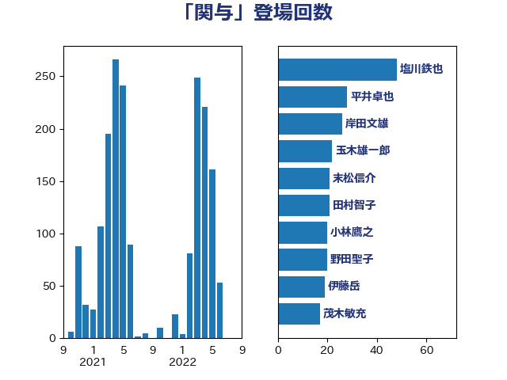

単語「関与」

| 塩川鉄也 | 日本共産党 | 48 回 |
| 平井卓也 | 自由民主党 | 28 回 |
| 岸田文雄 | 自由民主党 | 26 回 |
| 玉木雄一郎 | 国民民主党 | 22 回 |
| 末松信介 | 自由民主党 | 21 回 |
| 田村智子 | 日本共産党 | 21 回 |
| 小林鷹之 | 自由民主党 | 20 回 |
| 野田聖子 | 自由民主党 | 20 回 |
| 伊藤岳 | 日本共産党 | 19 回 |
| 茂木敏充 | 自由民主党 | 17 回 |
| 赤羽一嘉 | 公明党 | 17 回 |
| 足立康史 | 日本維新の会 | 15 回 |
| 山崎誠 | 立憲民主党 | 13 回 |
| 斉藤鉄夫 | 公明党 | 13 回 |
| 柳ヶ瀬裕文 | 日本維新の会 | 13 回 |
| 菅義偉 | 自由民主党 | 13 回 |
| 萩生田光一 | 自由民主党 | 13 回 |
| 上川陽子 | 自由民主党 | 12 回 |
| 山田宏 | 自由民主党 | 12 回 |
| 林芳正 | 自由民主党 | 12 回 |
| 梶山弘志 | 自由民主党 | 12 回 |
| 浅野哲 | 国民民主党 | 12 回 |
| 音喜多駿 | 日本維新の会 | 11 回 |
| 伊波洋一 | 無所属 | 10 回 |
| 道下大樹 | 立憲民主党 | 10 回 |
| 長妻昭 | 立憲民主党 | 10 回 |
| 麻生太郎 | 自由民主党 | 10 回 |
| 大串博志 | 立憲民主党 | 9 回 |
| 岸真紀子 | 立憲民主党 | 9 回 |
| 熊谷裕人 | 立憲民主党 | 9 回 |
| 古川禎久 | 自由民主党 | 8 回 |
| 奥野総一郎 | 立憲民主党 | 8 回 |
| 川田龍平 | 立憲民主党 | 8 回 |
| 池下卓 | 日本維新の会 | 8 回 |
| 牧島かれん | 自由民主党 | 8 回 |
| 篠原豪 | 立憲民主党 | 8 回 |
| 井上哲士 | 日本共産党 | 7 回 |
| 柴田巧 | 日本維新の会 | 7 回 |
| 櫻井周 | 立憲民主党 | 7 回 |
| 阿部知子 | 立憲民主党 | 7 回 |
| 伊藤孝江 | 公明党 | 6 回 |
| 山添拓 | 日本共産党 | 6 回 |
| 山田太郎 | 自由民主党 | 6 回 |
| 杉久武 | 公明党 | 6 回 |
| 河野義博 | 公明党 | 6 回 |
| 浜田聡 | NHK党 | 6 回 |
| 源馬謙太郎 | 立憲民主党 | 6 回 |
| 田村憲久 | 自由民主党 | 6 回 |
| 礒崎哲史 | 国民民主党 | 6 回 |
| 野上浩太郎 | 自由民主党 | 6 回 |
| 鈴木俊一 | 自由民主党 | 6 回 |
| 青山大人 | 立憲民主党 | 6 回 |
| 高橋千鶴子 | 日本共産党 | 6 回 |
| 中島克仁 | 立憲民主党 | 5 回 |
| 中谷真一 | 自由民主党 | 5 回 |
| 伊佐進一 | 公明党 | 5 回 |
| 伊藤孝恵 | 国民民主党 | 5 回 |
| 北村経夫 | 自由民主党 | 5 回 |
| 平木大作 | 公明党 | 5 回 |
| 後藤茂之 | 自由民主党 | 5 回 |
| 本村伸子 | 日本共産党 | 5 回 |
| 武田良太 | 自由民主党 | 5 回 |
| 田島麻衣子 | 立憲民主党 | 5 回 |
| 笠井亮 | 日本共産党 | 5 回 |
| 紙智子 | 日本共産党 | 5 回 |
| 芳賀道也 | 国民民主党 | 5 回 |
| 高木かおり | 日本維新の会 | 5 回 |
| 串田誠一 | 日本維新の会 | 4 回 |
| 井上信治 | 自由民主党 | 4 回 |
| 佐藤茂樹 | 公明党 | 4 回 |
| 加藤鮎子 | 自由民主党 | 4 回 |
| 吉田忠智 | 立憲民主党 | 4 回 |
| 大塚耕平 | 国民民主党 | 4 回 |
| 太栄志 | 立憲民主党 | 4 回 |
| 宮本岳志 | 日本共産党 | 4 回 |
| 小泉進次郎 | 自由民主党 | 4 回 |
| 小熊慎司 | 立憲民主党 | 4 回 |
| 小西洋之 | 立憲民主党 | 4 回 |
| 山岸一生 | 立憲民主党 | 4 回 |
| 打越さく良 | 立憲民主党 | 4 回 |
| 本庄知史 | 立憲民主党 | 4 回 |
| 松野博一 | 自由民主党 | 4 回 |
| 湯原俊二 | 立憲民主党 | 4 回 |
| 玄葉光一郎 | 立憲民主党 | 4 回 |
| 田中健 | 国民民主党 | 4 回 |
| 田村貴昭 | 日本共産党 | 4 回 |
| 福島みずほ | 社会民主党 | 4 回 |
| 舟山康江 | 国民民主党 | 4 回 |
| 辻元清美 | 立憲民主党 | 4 回 |
| 鈴木憲和 | 自由民主党 | 4 回 |
| 鎌田さゆり | 立憲民主党 | 4 回 |
| こやり隆史 | 自由民主党 | 3 回 |
| 三浦信祐 | 公明党 | 3 回 |
| 中根一幸 | 自由民主党 | 3 回 |
| 佐藤英道 | 公明党 | 3 回 |
| 倉林明子 | 日本共産党 | 3 回 |
| 加田裕之 | 自由民主党 | 3 回 |
| 加藤勝信 | 自由民主党 | 3 回 |
| 吉川沙織 | 立憲民主党 | 3 回 |
| 吉田統彦 | 立憲民主党 | 3 回 |
| 嘉田由紀子 | 無所属 | 3 回 |
| 室井邦彦 | 日本維新の会 | 3 回 |
| 小沼巧 | 立憲民主党 | 3 回 |
| 川合孝典 | 国民民主党 | 3 回 |
| 掘井健智 | 日本維新の会 | 3 回 |
| 杉田水脈 | 自由民主党 | 3 回 |
| 柚木道義 | 立憲民主党 | 3 回 |
| 泉健太 | 立憲民主党 | 3 回 |
| 浅田均 | 日本維新の会 | 3 回 |
| 浜野喜史 | 国民民主党 | 3 回 |
| 田村まみ | 国民民主党 | 3 回 |
| 矢倉克夫 | 公明党 | 3 回 |
| 石原正敬 | 自由民主党 | 3 回 |
| 石川大我 | 立憲民主党 | 3 回 |
| 石橋通宏 | 立憲民主党 | 3 回 |
| 石田昌宏 | 自由民主党 | 3 回 |
| 神谷裕 | 立憲民主党 | 3 回 |
| 緑川貴士 | 立憲民主党 | 3 回 |
| 羽田次郎 | 立憲民主党 | 3 回 |
| 西野太亮 | 自由民主党 | 3 回 |
| 豊田俊郎 | 自由民主党 | 3 回 |
| 赤嶺政賢 | 日本共産党 | 3 回 |
| 赤木正幸 | 日本維新の会 | 3 回 |
| 足立敏之 | 自由民主党 | 3 回 |
| 近藤和也 | 立憲民主党 | 3 回 |
| 重徳和彦 | 立憲民主党 | 3 回 |
| 三ッ林裕巳 | 自由民主党 | 2 回 |
| 上野通子 | 自由民主党 | 2 回 |
| 下村博文 | 自由民主党 | 2 回 |
| 下条みつ | 立憲民主党 | 2 回 |
| 中山展宏 | 自由民主党 | 2 回 |
| 中谷元 | 自由民主党 | 2 回 |
| 仁木博文 | 無所属 | 2 回 |
| 前原誠司 | 国民民主党 | 2 回 |
| 勝部賢志 | 立憲民主党 | 2 回 |
| 北神圭朗 | 無所属 | 2 回 |
| 吉良よし子 | 日本共産党 | 2 回 |
| 城井崇 | 立憲民主党 | 2 回 |
| 大石あきこ | れいわ新選組 | 2 回 |
| 大西健介 | 立憲民主党 | 2 回 |
| 安江伸夫 | 公明党 | 2 回 |
| 宮内秀樹 | 自由民主党 | 2 回 |
| 小倉將信 | 自由民主党 | 2 回 |
| 山井和則 | 立憲民主党 | 2 回 |
| 山口那津男 | 公明党 | 2 回 |
| 山谷えり子 | 自由民主党 | 2 回 |
| 岡田克也 | 立憲民主党 | 2 回 |
| 徳永久志 | 立憲民主党 | 2 回 |
| 斎藤アレックス | 国民民主党 | 2 回 |
| 新藤義孝 | 自由民主党 | 2 回 |
| 有村治子 | 自由民主党 | 2 回 |
| 末松義規 | 立憲民主党 | 2 回 |
| 杉尾秀哉 | 立憲民主党 | 2 回 |
| 東徹 | 日本維新の会 | 2 回 |
| 松沢成文 | 日本維新の会 | 2 回 |
| 枝野幸男 | 立憲民主党 | 2 回 |
| 森山浩行 | 立憲民主党 | 2 回 |
| 池畑浩太朗 | 日本維新の会 | 2 回 |
| 浜口誠 | 国民民主党 | 2 回 |
| 浜地雅一 | 公明党 | 2 回 |
| 浮島智子 | 公明党 | 2 回 |
| 清水貴之 | 日本維新の会 | 2 回 |
| 渡辺周 | 立憲民主党 | 2 回 |
| 熊田裕通 | 自由民主党 | 2 回 |
| 石川博崇 | 公明党 | 2 回 |
| 石川香織 | 立憲民主党 | 2 回 |
| 稲津久 | 公明党 | 2 回 |
| 穀田恵二 | 日本共産党 | 2 回 |
| 竹谷とし子 | 公明党 | 2 回 |
| 篠原孝 | 立憲民主党 | 2 回 |
| 緒方林太郎 | 無所属 | 2 回 |
| 舞立昇治 | 自由民主党 | 2 回 |
| 藤木眞也 | 自由民主党 | 2 回 |
| 西村智奈美 | 立憲民主党 | 2 回 |
| 赤池誠章 | 自由民主党 | 2 回 |
| 野田国義 | 立憲民主党 | 2 回 |
| 金子恭之 | 自由民主党 | 2 回 |
| 鈴木義弘 | 国民民主党 | 2 回 |
| 階猛 | 立憲民主党 | 2 回 |
| 青木愛 | 立憲民主党 | 2 回 |
| 青柳仁士 | 日本維新の会 | 2 回 |
| 馬場伸幸 | 日本維新の会 | 2 回 |
| 高橋光男 | 公明党 | 2 回 |
| おおつき紅葉 | 立憲民主党 | 1 回 |
| ながえ孝子 | 無所属 | 1 回 |
| 一谷勇一郎 | 日本維新の会 | 1 回 |
| 三木圭恵 | 日本維新の会 | 1 回 |
| 三谷英弘 | 自由民主党 | 1 回 |
| 上田清司 | 国民民主党 | 1 回 |
| 中川正春 | 立憲民主党 | 1 回 |
| 中川郁子 | 自由民主党 | 1 回 |
| 中谷一馬 | 立憲民主党 | 1 回 |
| 中野洋昌 | 公明党 | 1 回 |
| 丸川珠代 | 自由民主党 | 1 回 |
| 五十嵐清 | 自由民主党 | 1 回 |
| 井林辰憲 | 自由民主党 | 1 回 |
| 伊藤渉 | 公明党 | 1 回 |
| 佐々木さやか | 公明党 | 1 回 |
| 佐藤正久 | 自由民主党 | 1 回 |
| 前川清成 | 日本維新の会 | 1 回 |
| 務台俊介 | 自由民主党 | 1 回 |
| 古屋範子 | 公明党 | 1 回 |
| 古川俊治 | 自由民主党 | 1 回 |
| 古川康 | 自由民主党 | 1 回 |
| 古賀之士 | 立憲民主党 | 1 回 |
| 古賀友一郎 | 自由民主党 | 1 回 |
| 吉川赳 | 無所属 | 1 回 |
| 吉田宣弘 | 公明党 | 1 回 |
| 和田義明 | 自由民主党 | 1 回 |
| 国定勇人 | 自由民主党 | 1 回 |
| 國重徹 | 公明党 | 1 回 |
| 坂本哲志 | 自由民主党 | 1 回 |
| 堀井学 | 自由民主党 | 1 回 |
| 塩村あやか | 立憲民主党 | 1 回 |
| 大口善徳 | 公明党 | 1 回 |
| 大島敦 | 立憲民主党 | 1 回 |
| 太田房江 | 自由民主党 | 1 回 |
| 宮崎政久 | 自由民主党 | 1 回 |
| 宮崎雅夫 | 自由民主党 | 1 回 |
| 宮本周司 | 自由民主党 | 1 回 |
| 宮本徹 | 日本共産党 | 1 回 |
| 小宮山泰子 | 立憲民主党 | 1 回 |
| 小山展弘 | 立憲民主党 | 1 回 |
| 小沢雅仁 | 立憲民主党 | 1 回 |
| 小田原潔 | 自由民主党 | 1 回 |
| 小野田紀美 | 自由民主党 | 1 回 |
| 山下芳生 | 日本共産党 | 1 回 |
| 山口壯 | 自由民主党 | 1 回 |
| 山本博司 | 公明党 | 1 回 |
| 山本香苗 | 公明党 | 1 回 |
| 山田美樹 | 自由民主党 | 1 回 |
| 岡本あき子 | 立憲民主党 | 1 回 |
| 工藤彰三 | 自由民主党 | 1 回 |
| 市村浩一郎 | 日本維新の会 | 1 回 |
| 庄子賢一 | 公明党 | 1 回 |
| 後藤祐一 | 立憲民主党 | 1 回 |
| 徳永エリ | 立憲民主党 | 1 回 |
| 斎藤洋明 | 自由民主党 | 1 回 |
| 新妻秀規 | 公明党 | 1 回 |
| 木村次郎 | 自由民主党 | 1 回 |
| 杉本和巳 | 日本維新の会 | 1 回 |
| 松原仁 | 立憲民主党 | 1 回 |
| 松本剛明 | 自由民主党 | 1 回 |
| 松本尚 | 自由民主党 | 1 回 |
| 根本匠 | 自由民主党 | 1 回 |
| 森本真治 | 立憲民主党 | 1 回 |
| 横沢高徳 | 立憲民主党 | 1 回 |
| 橋本岳 | 自由民主党 | 1 回 |
| 櫻田義孝 | 自由民主党 | 1 回 |
| 武村展英 | 自由民主党 | 1 回 |
| 水岡俊一 | 立憲民主党 | 1 回 |
| 江田憲司 | 立憲民主党 | 1 回 |
| 津島淳 | 自由民主党 | 1 回 |
| 浅川義治 | 日本維新の会 | 1 回 |
| 渡辺創 | 立憲民主党 | 1 回 |
| 渡辺猛之 | 自由民主党 | 1 回 |
| 滝波宏文 | 自由民主党 | 1 回 |
| 牧原秀樹 | 自由民主党 | 1 回 |
| 牧山ひろえ | 立憲民主党 | 1 回 |
| 猪口邦子 | 自由民主党 | 1 回 |
| 田名部匡代 | 立憲民主党 | 1 回 |
| 田嶋要 | 立憲民主党 | 1 回 |
| 田畑裕明 | 自由民主党 | 1 回 |
| 畦元将吾 | 自由民主党 | 1 回 |
| 石井章 | 日本維新の会 | 1 回 |
| 神津たけし | 立憲民主党 | 1 回 |
| 福山哲郎 | 立憲民主党 | 1 回 |
| 福岡資麿 | 自由民主党 | 1 回 |
| 福島伸享 | 無所属 | 1 回 |
| 福田昭夫 | 立憲民主党 | 1 回 |
| 稲富修二 | 立憲民主党 | 1 回 |
| 竹内真二 | 公明党 | 1 回 |
| 笠浩史 | 無所属 | 1 回 |
| 笹川博義 | 自由民主党 | 1 回 |
| 簗和生 | 自由民主党 | 1 回 |
| 自見はなこ | 自由民主党 | 1 回 |
| 舩後靖彦 | れいわ新選組 | 1 回 |
| 船田元 | 自由民主党 | 1 回 |
| 若宮健嗣 | 自由民主党 | 1 回 |
| 若松謙維 | 公明党 | 1 回 |
| 若林健太 | 自由民主党 | 1 回 |
| 菅直人 | 立憲民主党 | 1 回 |
| 菊田真紀子 | 立憲民主党 | 1 回 |
| 落合貴之 | 立憲民主党 | 1 回 |
| 藤原崇 | 自由民主党 | 1 回 |
| 藤巻健太 | 日本維新の会 | 1 回 |
| 西村康稔 | 自由民主党 | 1 回 |
| 西田実仁 | 公明党 | 1 回 |
| 西田昌司 | 自由民主党 | 1 回 |
| 西銘恒三郎 | 自由民主党 | 1 回 |
| 赤澤亮正 | 自由民主党 | 1 回 |
| 輿水恵一 | 公明党 | 1 回 |
| 逢坂誠二 | 立憲民主党 | 1 回 |
| 金城泰邦 | 公明党 | 1 回 |
| 金子俊平 | 自由民主党 | 1 回 |
| 鈴木庸介 | 立憲民主党 | 1 回 |
| 鈴木淳司 | 自由民主党 | 1 回 |
| 長峯誠 | 自由民主党 | 1 回 |
| 長浜博行 | 無所属 | 1 回 |
| 阿達雅志 | 自由民主党 | 1 回 |
| 青木一彦 | 自由民主党 | 1 回 |
| 青柳陽一郎 | 立憲民主党 | 1 回 |
| 須藤元気 | 無所属 | 1 回 |
| 高市早苗 | 自由民主党 | 1 回 |
| 高橋はるみ | 自由民主党 | 1 回 |
| 高橋克法 | 自由民主党 | 1 回 |
| 高階恵美子 | 自由民主党 | 1 回 |
| 齋藤健 | 自由民主党 | 1 回 |